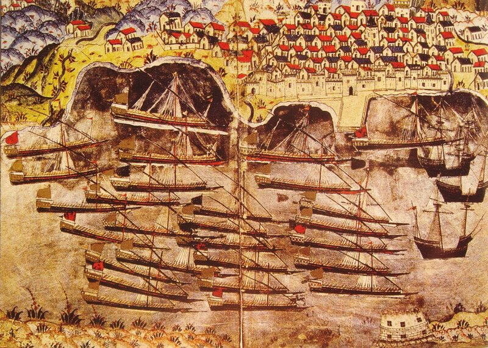
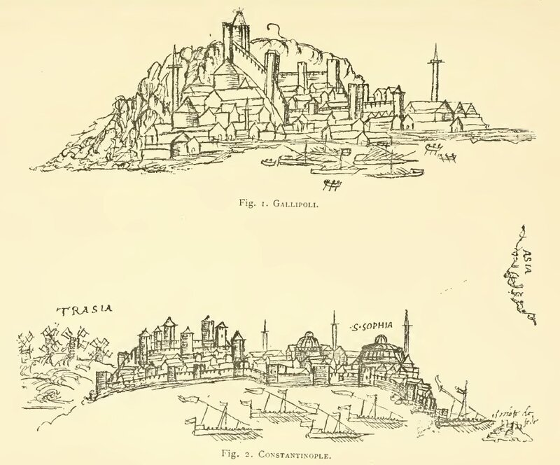

Зимовка турецкого флота в Тулоне. Анонимный автор. Из книги Roger Crowley "Empires of the Sea"
Прежде чем идти дальше в нашем рассказе, попытаемся ответить на вопрос: почему Эскален, наделенный высокими командными функциями, являвшийся личным представителем короля во всех делах, связанных с флотом Франции на Средиземном море, так долго не получал титула Генерала галер? Некоторые историки связывают это с отсутствием в то время подтверждений его благородного происхождения. Другие, и это кажется более достоверным, ссылаются на то, что данный пост в тот период занимал принц крови Франсуа Бурбон, граф Энгиенский. Поэтому многочисленные ссылки в исторической литературе на то, что Эскален стал Генералом галер Франции еще весной 1543 года представляются не совсем обоснованными. Они связаны с произвольным толкованием должностных обязанностей Эскалена как свидетельства о его назначении на пост Генерала галер, или зачастую просто с опечатками в приводимых текстах документов (как это произошло, например, в указанной выше статье Bouvier.) Фактически Эскален стал Генералом галер 23 апреля 1544 года. Основанием для этого утверждения является текст королевского указа, подписанного в этот день. Вот этот текст:
« François Ier, etc. Scavoir faisons que pour la singulière et entière
confiance que nous avons de la personne de nostre amé et féal Antoine Escalin
dit le Polin, chevalier, nostre conseiller et chambellan ordinaire, de ses
sens, experience, au fait de la marine, de la guerre et des armes… icelluy,
avons… estably… chef et capitaine général de nostre dite armée de mer du
Levant, luy donnant plein pouvoir, pleine puissance, autorité, d’ordonner
déliberer et disposer de nos dites galères et vaisseaux, gens de guerre de cap et
de rame, artillerie et équipage qui sont dessus, et les exploiter à l’encontre
dudit empereur et autres, etc.
Luy avons donné et donnons pouvoir puissance et autorité d’ordonner du
payement des gens de guerre, ensemble des autres frais qu’il conviendra faire,
etc., et les payements être passez et allouez en la despances des comptes de
nos trésoriers […]
En tesmoin de ce avons signé les presentes de nostre main et à icelles
fait mettre nostre scel. Donné à Batteville le 23 avril 1544, Françoys. Par le
roy, le sieur d’Annebaut, mareschal et admiral de France, présent. »
(Bulletin de la société d’archéologie et de statistiques de la Drôme, Valence, 1896, p. 52-53)
Однако и в этом указе, несмотря на подчинение всех французских военно-морских сил на Средиземном море Эскалену, нет прямого указания о присвоении ему титула Генерала галер. Антуан здесь именуется «chef et capitaine général de nostre dite armée de mer du Levant» - «главой и капитан-генералом военно-морских сил Леванта», а это не одно и то же. И все же это первый указ Франциска I, в котором четко указывается круг должностных обязанностей Генерала галер. И при подписании которого присутствует адмирал Франции как гарант исполнения воли короля. Все последующие назначения на эту должность осуществлялись по данной схеме.
С провозглашением Эскалена генералом галер была связана еще одна неувязка: Франция в своем флоте Леванта на тот момент не имела ни одной галеры. Были частные галеры отдельных судовладельцев, мнение Барбароссы о состоянии которых мы приводили выше. Эскален со свойственной ему решимостью немедленно за свой счет заказал строительство двух новых современных галер: флагманской la Réale и le Saint-Pierre. La Réale (Réalle) стала прообразом всех последующих флагманских галер Генерала галер Франции. На ней использовалась система гребли a scaloccio , на каждом весле сидело по пять человек. На этих галерах Эскален отправился в Константинополь, находясь в центре ордера турецкого флота Барбароссы. Мы много знаем об этом путешествии благодаря тому, что капеллан флагманской галеры Жером Моран (Jérôme Maurand) написал подробный отчет о нем. Отчет первоначально был издан на итальянском языке, а затем переиздан с параллельным переводом на французский (Издание Itinéraire de Jerome Maurand d'Antibes a Constantinople, Paris Ernest Leroux, éditeur, 1901, имеется в коллекции http://www.archive.org). Книга иллюстрирована авторскими рисунками пером. Пример этих рисунков приведен ниже.

А теперь еще об одном вопросе, связанном с назначенинем Эскалена на должность Генерала галер Франции. В это время на Средиземноморском театре шло соперничество между двумя флотоводцами, двумя итальянцами на службе французского короля: известным уже нам Леоном Строцци и адмиралом Вирджинио Орсини (Virginio Orsini dell 'Anguillara). Они являлись главными претендентами на пост Генерала галер после назначения Франсуа Бурбона адмиралом и маршалом Франции.
Как раз в это время появился солдат удачи Антуан Эскален. Давно известно, что когда двое дерутся, третий остается в выгоде, или, если оставаться на французской почве, Эскален «mit les deux Italiens d'accord en jouant le rôle du troisième larron.»( Charles de la Roncière Histoire de la Marine Française, t.3). Ронсьер намекает здесь на известную басню Лафонтена «Воры и осел» (Les Voleurs et l'Ane):
Pour un Ane enlevé deux Voleurs se battaient :
L'un voulait le garder ; l'autre le voulait vendre.
Tandis que coups de poing trottaient,
Et que nos champions songeaient à se défendre,
Arrive un troisième larron
Qui saisit maître Aliboron.
Украв вдвоем Осла, сцепилися два Вора.
"Он мой!" - кричит один. "Нет, мой!" -
В ответ ему вопит другой.
До драки вмиг дошла их ссора:
Гремит по лесу шумный бой,
Друг друга бьют они без счету и без толку;
А третий Вор меж тем, подкравшись втихомолку,
Схватил Осла за холку
И в лес увел с собой.
(Перевод Сумарокова)
Продолжение последует спустя некоторое время. (Завтра поеду с внучкой в деревню. Работать там не прекращаю, но в Интернет не выхожу,
иначе это уже не деревня. А главное – дурной пример для внуков.)